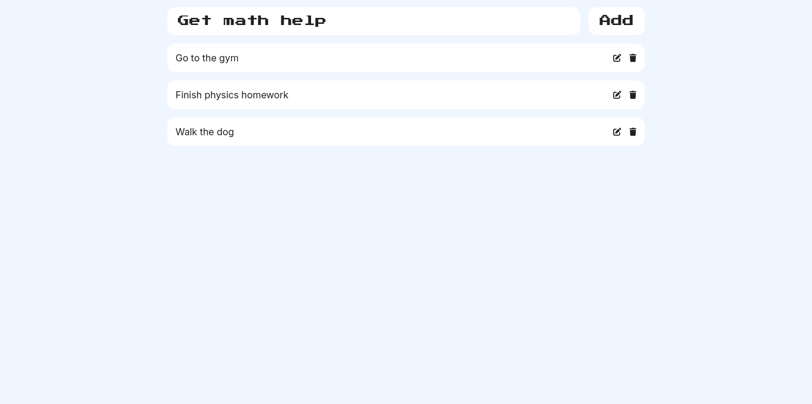

Phase 1: React Learning & Mini Projects (Feb 1 - March 10)
-
Week 1: Build a Todo List App while learning React fundamentals, including JSX, components, and state management.
During Week 1, I learned the importance of structuring components and managing their states effectively. Working on the Todo List App helped me grasp concepts like handling user input with controlled components, updating states dynamically, and implementing conditional rendering. I also practiced styling components to improve the overall look of the app.
 - Week 2: Develop a NASA App that fetches real-time space data using APIs, enhancing API integration skills.
- Week 3: Create a Gym App that incorporates complex state management and improves UI/UX understanding.
- Week 4: Work on a Machine Learning App, integrating basic ML concepts with React to explore AI-driven web apps.
- Week 5-6: Refine all projects, improve documentation, and optimize GitHub profiles with enhanced READMEs and project visibility.
Phase 2: React Full-Stack Project (March 11 - April 14)
- Week 7: Brainstorm project ideas, set goals, and define the tech stack and architecture.
- Week 8-9: Core development phase—implement frontend, backend, database, and API connections.
- Week 10: Test functionalities, debug issues, and enhance UI/UX with animations and optimizations.
- Week 11: Final polishing, deploy the project, and update portfolios with a detailed case study.
Phase 3: AWS Cloud Practitioner (Optional, April 15 - May 5)
- Week 12-13: Learn AWS core services, cloud computing concepts, and practice real-world applications.
- Week 14: Final review, mock exams, and AWS certification attempt.
Final Deliverables Before May
- ✅ 4 Mini Projects (Todo List, NASA App, Gym App, ML App)
- ✅ 1 Large React Project (with Rohit)
- ✅ GitHub Profile Boost (Consistent commits, clear READMEs, polished code)
- ✅ Portfolio Enhancements (Project summaries, images, clickable timelines)
- ✅ (Optional) AWS Certification